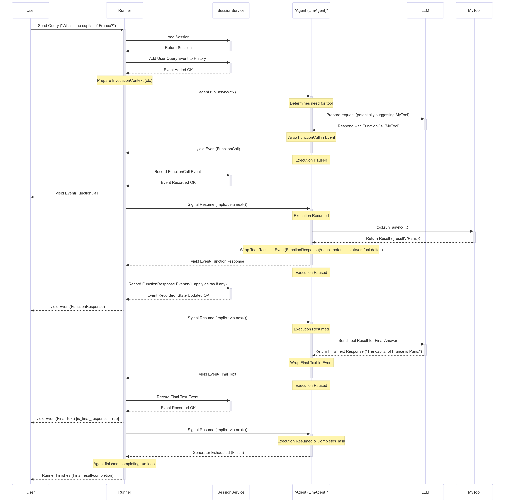

Runtime Event Loop¶
The ADK Runtime is the underlying engine that powers your agent application during user interactions. It's the system that takes your defined agents, tools, and callbacks and orchestrates their execution in response to user input, managing the flow of information, state changes, and interactions with external services like LLMs or storage.
Think of the Runtime as the "engine" of your agentic application. You define the parts (agents, tools), and the Runtime handles how they connect and run together to fulfill a user's request.
Core Idea: The Event Loop¶
At its heart, the ADK Runtime operates on an Event Loop. This loop facilitates a back-and-forth communication between the Runner component and your defined "Execution Logic" (which includes your Agents, the LLM calls they make, Callbacks, and Tools).

In simple terms:
- The
Runnerreceives a user query and asks the mainAgentto start processing. - The
Agent(and its associated logic) runs until it has something to report (like a response, a request to use a tool, or a state change) – it then yields or emits anEvent. - The
Runnerreceives thisEvent, processes any associated actions (like saving state changes viaServices), and forwards the event onwards (e.g., to the user interface). - The
Agent's logic resumes from where it paused only after theRunnerhas processed the event, and then potentially sees the effects of the changes committed by the Runner. - This cycle repeats until the agent has no more events to yield for the current user query.
This event-driven loop is the fundamental pattern governing how ADK executes your agent code.
The Heartbeat: The Event Loop - Inner workings¶
The Event Loop is the core operational pattern defining the interaction between the Runner and your custom code (Agents, Tools, Callbacks, collectively referred to as "Execution Logic" or "Logic Components" in the design document). It establishes a clear division of responsibilities:
Note
The specific method names and parameter names may vary slightly by SDK language (e.g., agent.run_async(...) in Python, agent.Run(...) in Go, agent.runAsync(...) in Java and TypeScript). Refer to the language-specific API documentation for details.
Runner's Role (Orchestrator)¶
The Runner acts as the central coordinator for a single user invocation. Its responsibilities in the loop are:
- Initiation: Receives the end user's query (
new_message) and typically appends it to the session history via theSessionService. - Kick-off: Starts the event generation process by calling the main agent's execution method (e.g.,
agent_to_run.run_async(...)). - Receive & Process: Waits for the agent logic to
yieldoremitanEvent. Upon receiving an event, the Runner promptly processes it. This involves:- Using configured
Services(SessionService,ArtifactService,MemoryService) to commit changes indicated inevent.actions(likestate_delta,artifact_delta). - Performing other internal bookkeeping.
- Using configured
- Yield Upstream: Forwards the processed event onwards (e.g., to the calling application or UI for rendering).
- Iterate: Signals the agent logic that processing is complete for the yielded event, allowing it to resume and generate the next event.
Conceptual Runner Loop:
# Simplified view of Runner's main loop logic
async def run_async(new_query, ...) -> AsyncGenerator[Event, None]:
# 1. Append new_query to session event history (via SessionService)
await session_service.append_event(session, Event(author='user', content=new_query))
# 2. Kick off event loop by calling the agent
agent_event_generator = agent_to_run.run_async(context)
async for event in agent_event_generator:
# 3. Process the generated event and commit changes
await session_service.append_event(session, event) # Commits state/artifact deltas etc.
# memory_service.update_memory(...) # If applicable
# artifact_service might have already been called via context during agent run
# 4. Yield event for upstream processing (e.g., UI rendering)
yield event
# Runner implicitly signals agent generator can continue after yielding
// Simplified view of Runner's main loop logic
async * runAsync(newQuery: Content, ...): AsyncGenerator<Event, void, void> {
// 1. Append newQuery to session event history (via SessionService)
await sessionService.appendEvent({
session,
event: createEvent({author: 'user', content: newQuery})
});
// 2. Kick off event loop by calling the agent
const agentEventGenerator = agentToRun.runAsync(context);
for await (const event of agentEventGenerator) {
// 3. Process the generated event and commit changes
// Commits state/artifact deltas etc.
await sessionService.appendEvent({session, event});
// memoryService.updateMemory(...) // If applicable
// artifactService might have already been called via context during agent run
// 4. Yield event for upstream processing (e.g., UI rendering)
yield event;
// Runner implicitly signals agent generator can continue after yielding
}
}
// Simplified conceptual view of the Runner's main loop logic in Go
func (r *Runner) RunConceptual(ctx context.Context, session *session.Session, newQuery *genai.Content) iter.Seq2[*Event, error] {
return func(yield func(*Event, error) bool) {
// 1. Append new_query to session event history (via SessionService)
// ...
userEvent := session.NewEvent(ctx, ctx.InvocationID()) // Simplified for conceptual view
userEvent.Author = "user"
userEvent.LLMResponse = model.LLMResponse{Content: newQuery}
if _, err := r.sessionService.Append(ctx, &session.AppendRequest{Event: userEvent}); err != nil {
yield(nil, err)
return
}
// 2. Kick off event stream by calling the agent
// Assuming agent.Run also returns iter.Seq2[*Event, error]
agentEventsAndErrs := r.agent.Run(ctx, &agent.RunRequest{Session: session, Input: newQuery})
for event, err := range agentEventsAndErrs {
if err != nil {
if !yield(event, err) { // Yield event even if there's an error, then stop
return
}
return // Agent finished with an error
}
// 3. Process the generated event and commit changes
// Only commit non-partial event to a session service (as seen in actual code)
if !event.LLMResponse.Partial {
if _, err := r.sessionService.Append(ctx, &session.AppendRequest{Event: event}); err != nil {
yield(nil, err)
return
}
}
// memory_service.update_memory(...) // If applicable
// artifact_service might have already been called via context during agent run
// 4. Yield event for upstream processing
if !yield(event, nil) {
return // Upstream consumer stopped
}
}
// Agent finished successfully
}
}
// Simplified conceptual view of the Runner's main loop logic in Java.
public Flowable<Event> runConceptual(
Session session,
InvocationContext invocationContext,
Content newQuery
) {
// 1. Append new_query to session event history (via SessionService)
// ...
sessionService.appendEvent(session, userEvent).blockingGet();
// 2. Kick off event stream by calling the agent
Flowable<Event> agentEventStream = agentToRun.runAsync(invocationContext);
// 3. Process each generated event, commit changes, and "yield" or "emit"
return agentEventStream.map(event -> {
// This mutates the session object (adds event, applies stateDelta).
// The return value of appendEvent (a Single<Event>) is conceptually
// just the event itself after processing.
sessionService.appendEvent(session, event).blockingGet(); // Simplified blocking call
// memory_service.update_memory(...) // If applicable - conceptual
// artifact_service might have already been called via context during agent run
// 4. "Yield" event for upstream processing
// In RxJava, returning the event in map effectively yields it to the next operator or subscriber.
return event;
});
}
/**
* Simplified view of Runner's main loop logic in Kotlin
*/
fun runAsync(
userId: String,
sessionId: String,
newMessage: Content,
runner: InMemoryRunner,
sessionService: InMemorySessionService,
): Flow<Event> {
// 1. Append newMessage to session event history (via SessionService)
// 2. Kick off event loop by calling the agent
// 3. Process generated events, commit changes, and yield upstream
return runner
.runAsync(
userId = userId,
sessionId = sessionId,
newMessage = newMessage,
).onEach { event ->
// Process the event and commit changes to services (done internally by Runner)
// sessionService.appendEvent(...)
}
}
Execution Logic's Role (Agent, Tool, Callback)¶
Your code within agents, tools, and callbacks is responsible for the actual computation and decision-making. Its interaction with the loop involves:
- Execute: Runs its logic based on the current
InvocationContext, including the session state as it was when execution resumed. - Yield: When the logic needs to communicate (send a message, call a tool, report a state change), it constructs an
Eventcontaining the relevant content and actions, and thenyields this event back to theRunner. - Pause: Crucially, execution of the agent logic pauses immediately after the
yieldstatement (orreturnin RxJava). It waits for theRunnerto complete step 3 (processing and committing). - Resume: Only after the
Runnerhas processed the yielded event does the agent logic resume execution from the statement immediately following theyield. - See Updated State: Upon resumption, the agent logic can now reliably access the session state (
ctx.session.state) reflecting the changes that were committed by theRunnerfrom the previously yielded event.
Conceptual Execution Logic:
# Simplified view of logic inside Agent.run_async, callbacks, or tools
# ... previous code runs based on current state ...
# 1. Determine a change or output is needed, construct the event
# Example: Updating state
update_data = {'field_1': 'value_2'}
event_with_state_change = Event(
author=self.name,
actions=EventActions(state_delta=update_data),
content=types.Content(parts=[types.Part(text="State updated.")])
# ... other event fields ...
)
# 2. Yield the event to the Runner for processing & commit
yield event_with_state_change
# <<<<<<<<<<<< EXECUTION PAUSES HERE >>>>>>>>>>>>
# <<<<<<<<<<<< RUNNER PROCESSES & COMMITS THE EVENT >>>>>>>>>>>>
# 3. Resume execution ONLY after Runner is done processing the above event.
# Now, the state committed by the Runner is reliably reflected.
# Subsequent code can safely assume the change from the yielded event happened.
val = ctx.session.state['field_1']
# here `val` is guaranteed to be "value_2" (assuming Runner committed successfully)
print(f"Resumed execution. Value of field_1 is now: {val}")
# ... subsequent code continues ...
# Maybe yield another event later...
// Simplified view of logic inside Agent.runAsync, callbacks, or tools
// ... previous code runs based on current state ...
// 1. Determine a change or output is needed, construct the event
// Example: Updating state
const updateData = {'field_1': 'value_2'};
const eventWithStateChange = createEvent({
author: this.name,
actions: createEventActions({stateDelta: updateData}),
content: {parts: [{text: "State updated."}]}
// ... other event fields ...
});
// 2. Yield the event to the Runner for processing & commit
yield eventWithStateChange;
// <<<<<<<<<<<< EXECUTION PAUSES HERE >>>>>>>>>>>>
// <<<<<<<<<<<< RUNNER PROCESSES & COMMITS THE EVENT >>>>>>>>>>>>
// 3. Resume execution ONLY after Runner is done processing the above event.
// Now, the state committed by the Runner is reliably reflected.
// Subsequent code can safely assume the change from the yielded event happened.
const val = ctx.session.state['field_1'];
// here `val` is guaranteed to be "value_2" (assuming Runner committed successfully)
console.log(`Resumed execution. Value of field_1 is now: ${val}`);
// ... subsequent code continues ...
// Maybe yield another event later...
// Simplified view of logic inside Agent.Run, callbacks, or tools
// ... previous code runs based on current state ...
// 1. Determine a change or output is needed, construct the event
// Example: Updating state
updateData := map[string]interface{}{"field_1": "value_2"}
eventWithStateChange := &Event{
Author: self.Name(),
Actions: &EventActions{StateDelta: updateData},
Content: genai.NewContentFromText("State updated.", "model"),
// ... other event fields ...
}
// 2. Yield the event to the Runner for processing & commit
// In Go, this is done by sending the event to a channel.
eventsChan <- eventWithStateChange
// <<<<<<<<<<<< EXECUTION PAUSES HERE (conceptually) >>>>>>>>>>>>
// The Runner on the other side of the channel will receive and process the event.
// The agent's goroutine might continue, but the logical flow waits for the next input or step.
// <<<<<<<<<<<< RUNNER PROCESSES & COMMITS THE EVENT >>>>>>>>>>>>
// 3. Resume execution ONLY after Runner is done processing the above event.
// In a real Go implementation, this would likely be handled by the agent receiving
// a new RunRequest or context indicating the next step. The updated state
// would be part of the session object in that new request.
// For this conceptual example, we'll just check the state.
val := ctx.State.Get("field_1")
// here `val` is guaranteed to be "value_2" because the Runner would have
// updated the session state before calling the agent again.
fmt.Printf("Resumed execution. Value of field_1 is now: %v\n", val)
// ... subsequent code continues ...
// Maybe send another event to the channel later...
// Simplified view of logic inside Agent.runAsync, callbacks, or tools
// ... previous code runs based on current state ...
// 1. Determine a change or output is needed, construct the event
// Example: Updating state
ConcurrentMap<String, Object> updateData = new ConcurrentHashMap<>();
updateData.put("field_1", "value_2");
EventActions actions = EventActions.builder().stateDelta(updateData).build();
Content eventContent = Content.builder().parts(Part.fromText("State updated.")).build();
Event eventWithStateChange = Event.builder()
.author(self.name())
.actions(actions)
.content(Optional.of(eventContent))
// ... other event fields ...
.build();
// 2. "Yield" the event. In RxJava, this means emitting it into the stream.
// The Runner (or upstream consumer) will subscribe to this Flowable.
// When the Runner receives this event, it will process it (e.g., call sessionService.appendEvent).
// The 'appendEvent' in Java ADK mutates the 'Session' object held within 'ctx' (InvocationContext).
// <<<<<<<<<<<< CONCEPTUAL PAUSE POINT >>>>>>>>>>>>
// In RxJava, the emission of 'eventWithStateChange' happens, and then the stream
// might continue with a 'flatMap' or 'concatMap' operator that represents
// the logic *after* the Runner has processed this event.
// To model the "resume execution ONLY after Runner is done processing":
// The Runner's `appendEvent` is usually an async operation itself (returns Single<Event>).
// The agent's flow needs to be structured such that subsequent logic
// that depends on the committed state runs *after* that `appendEvent` completes.
// This is how the Runner typically orchestrates it:
// Runner:
// agent.runAsync(ctx)
// .concatMapEager(eventFromAgent ->
// sessionService.appendEvent(ctx.session(), eventFromAgent) // This updates ctx.session().state()
// .toFlowable() // Emits the event after it's processed
// )
// .subscribe(processedEvent -> { /* UI renders processedEvent */ });
// So, within the agent's own logic, if it needs to do something *after* an event it yielded
// has been processed and its state changes are reflected in ctx.session().state(),
// that subsequent logic would typically be in another step of its reactive chain.
// For this conceptual example, we'll emit the event, and then simulate the "resume"
// as a subsequent operation in the Flowable chain.
return Flowable.just(eventWithStateChange) // Step 2: Yield the event
.concatMap(yieldedEvent -> {
// <<<<<<<<<<<< RUNNER CONCEPTUALLY PROCESSES & COMMITS THE EVENT >>>>>>>>>>>>
// At this point, in a real runner, ctx.session().appendEvent(yieldedEvent) would have been called
// by the Runner, and ctx.session().state() would be updated.
// Since we are *inside* the agent's conceptual logic trying to model this,
// we assume the Runner's action has implicitly updated our 'ctx.session()'.
// 3. Resume execution.
// Now, the state committed by the Runner (via sessionService.appendEvent)
// is reliably reflected in ctx.session().state().
Object val = ctx.session().state().get("field_1");
// here `val` is guaranteed to be "value_2" because the `sessionService.appendEvent`
// called by the Runner would have updated the session state within the `ctx` object.
System.out.println("Resumed execution. Value of field_1 is now: " + val);
// ... subsequent code continues ...
// If this subsequent code needs to yield another event, it would do so here.
/**
* Simplified view of logic inside Agent.runAsync, callbacks, or tools in Kotlin
*/
suspend fun executionLogic(ctx: InvocationContext) {
// ... previous code runs based on current state ...
// 1. Determine a change or output is needed, construct the event
val updateData = mapOf("field_1" to "value_2")
val eventWithStateChange =
Event(
author = "my_agent",
actions = EventActions(stateDelta = updateData.toMutableMap()),
content = Content.fromText(Role.MODEL, "State updated."),
)
// 2. Yield the event to the Runner for processing & commit
// In Kotlin, this is done by emitting to the Flow
// emit(eventWithStateChange)
// <<<<<<<<<<<< EXECUTION PAUSES HERE >>>>>>>>>>>>
// (Implicitly, when the Flow consumer collects the event and processes it)
// <<<<<<<<<<<< RUNNER PROCESSES & COMMITS THE EVENT >>>>>>>>>>>>
// 3. Resume execution ONLY after Runner is done processing.
// Now, the state committed by the Runner is reliably reflected.
val val1 = ctx.session.state["field_1"]
println("Resumed execution. Value of field_1 is now: $val1")
}
This cooperative yield/pause/resume cycle between the Runner and your Execution Logic, mediated by Event objects, forms the core of the ADK Runtime.
Key components of the Runtime¶
Several components work together within the ADK Runtime to execute an agent invocation. Understanding their roles clarifies how the event loop functions:
-
Runner¶- Role: The main entry point and orchestrator for a single user query (
run_async). - Function: Manages the overall Event Loop, receives events yielded by the Execution Logic, coordinates with Services to process and commit event actions (state/artifact changes), and forwards processed events upstream (e.g., to the UI). It essentially drives the conversation turn by turn based on yielded events. (Defined in
google.adk.runners).
- Role: The main entry point and orchestrator for a single user query (
-
Execution Logic Components¶
- Role: The parts containing your custom code and the core agent capabilities.
- Components:
Agent(BaseAgent,LlmAgent, etc.): Your primary logic units that process information and decide on actions. They implement the_run_async_implmethod which yields events.Tools(BaseTool,FunctionTool,AgentTool, etc.): External functions or capabilities used by agents (oftenLlmAgent) to interact with the outside world or perform specific tasks. They execute and return results, which are then wrapped in events.Callbacks(Functions): User-defined functions attached to agents (e.g.,before_agent_callback,after_model_callback) that hook into specific points in the execution flow, potentially modifying behavior or state, whose effects are captured in events.
- Function: Perform the actual thinking, calculation, or external interaction. They communicate their results or needs by yielding
Eventobjects and pausing until the Runner processes them.
-
Event¶- Role: The message passed back and forth between the
Runnerand the Execution Logic. - Function: Represents an atomic occurrence (user input, agent text, tool call/result, state change request, control signal). It carries both the content of the occurrence and the intended side effects (
actionslikestate_delta).
- Role: The message passed back and forth between the
-
Services¶- Role: Backend components responsible for managing persistent or shared resources. Used primarily by the
Runnerduring event processing. - Components:
SessionService(BaseSessionService,InMemorySessionService, etc.): ManagesSessionobjects, including saving/loading them, applyingstate_deltato the session state, and appending events to theevent history.ArtifactService(BaseArtifactService,InMemoryArtifactService,GcsArtifactService, etc.): Manages the storage and retrieval of binary artifact data. Althoughsave_artifactis called via context during execution logic, theartifact_deltain the event confirms the action for the Runner/SessionService.MemoryService(BaseMemoryService, etc.): (Optional) Manages long-term semantic memory across sessions for a user.
- Function: Provide the persistence layer. The
Runnerinteracts with them to ensure changes signaled byevent.actionsare reliably stored before the Execution Logic resumes.
- Role: Backend components responsible for managing persistent or shared resources. Used primarily by the
-
Session¶- Role: A data container holding the state and history for one specific conversation between a user and the application.
- Function: Stores the current
statedictionary, the list of all pastevents(event history), and references to associated artifacts. It's the primary record of the interaction, managed by theSessionService.
-
Invocation¶- Role: A conceptual term representing everything that happens in response to a single user query, from the moment the
Runnerreceives it until the agent logic finishes yielding events for that query. - Function: An invocation might involve multiple agent runs (if using agent transfer or
AgentTool), multiple LLM calls, tool executions, and callback executions, all tied together by a singleinvocation_idwithin theInvocationContext. State variables prefixed withtemp:are strictly scoped to a single invocation and discarded afterwards.
- Role: A conceptual term representing everything that happens in response to a single user query, from the moment the
These players interact continuously through the Event Loop to process a user's request.
How It Works: A Simplified Invocation¶
Let's trace a simplified flow for a typical user query that involves an LLM agent calling a tool:

Step-by-Step Breakdown¶
- User Input: The User sends a query (e.g., "What's the capital of France?").
- Runner Starts:
Runner.run_asyncbegins. It interacts with theSessionServiceto load the relevantSessionand adds the user query as the firstEventto the session history. AnInvocationContext(ctx) is prepared. - Agent Execution: The
Runnercallsagent.run_async(ctx)on the designated root agent (e.g., anLlmAgent). - LLM Call (Example): The
Agent_Llmdetermines it needs information, perhaps by calling a tool. It prepares a request for theLLM. Let's assume the LLM decides to callMyTool. - Yield FunctionCall Event: The
Agent_Llmreceives theFunctionCallresponse from the LLM, wraps it in anEvent(author='Agent_Llm', content=Content(parts=[Part(function_call=...)])), andyieldsoremitsthis event. - Agent Pauses: The
Agent_Llm's execution pauses immediately after theyield. - Runner Processes: The
Runnerreceives the FunctionCall event. It passes it to theSessionServiceto record it in the history. TheRunnerthen yields the event upstream to theUser(or application). - Agent Resumes: The
Runnersignals that the event is processed, andAgent_Llmresumes execution. - Tool Execution: The
Agent_Llm's internal flow now proceeds to execute the requestedMyTool. It callstool.run_async(...). - Tool Returns Result:
MyToolexecutes and returns its result (e.g.,{'result': 'Paris'}). - Yield FunctionResponse Event: The agent (
Agent_Llm) wraps the tool result into anEventcontaining aFunctionResponsepart (e.g.,Event(author='Agent_Llm', content=Content(role='user', parts=[Part(function_response=...)]))). This event might also containactionsif the tool modified state (state_delta) or saved artifacts (artifact_delta). The agentyields this event. - Agent Pauses:
Agent_Llmpauses again. - Runner Processes:
Runnerreceives the FunctionResponse event. It passes it toSessionServicewhich applies anystate_delta/artifact_deltaand adds the event to history.Runneryields the event upstream. - Agent Resumes:
Agent_Llmresumes, now knowing the tool result and any state changes are committed. - Final LLM Call (Example):
Agent_Llmsends the tool result back to theLLMto generate a natural language response. - Yield Final Text Event:
Agent_Llmreceives the final text from theLLM, wraps it in anEvent(author='Agent_Llm', content=Content(parts=[Part(text=...)])), andyields it. - Agent Pauses:
Agent_Llmpauses. - Runner Processes:
Runnerreceives the final text event, passes it toSessionServicefor history, and yields it upstream to theUser. This is likely marked as theis_final_response(). - Agent Resumes & Finishes:
Agent_Llmresumes. Having completed its task for this invocation, itsrun_asyncgenerator finishes. - Runner Completes: The
Runnersees the agent's generator is exhausted and finishes its loop for this invocation.
This yield/pause/process/resume cycle ensures that state changes are consistently applied and that the execution logic always operates on the most recently committed state after yielding an event.
Important Runtime Behaviors¶
Understanding a few key aspects of how the ADK Runtime handles state, streaming, and asynchronous operations is crucial for building predictable and efficient agents.
State Updates & Commitment Timing¶
-
The Rule: When your code (in an agent, tool, or callback) modifies the session state (e.g.,
context.state['my_key'] = 'new_value'), this change is initially recorded locally within the currentInvocationContext. The change is only guaranteed to be persisted (saved by theSessionService) after theEventcarrying the correspondingstate_deltain itsactionshas beenyield-ed by your code and subsequently processed by theRunner. -
Implication: Code that runs after resuming from a
yieldcan reliably assume that the state changes signaled in the yielded event have been committed.
# Inside agent logic (conceptual)
# 1. Modify state
ctx.session.state['status'] = 'processing'
event1 = Event(..., actions=EventActions(state_delta={'status': 'processing'}))
# 2. Yield event with the delta
yield event1
# --- PAUSE --- Runner processes event1, SessionService commits 'status' = 'processing' ---
# 3. Resume execution
# Now it's safe to rely on the committed state
current_status = ctx.session.state['status'] # Guaranteed to be 'processing'
print(f"Status after resuming: {current_status}")
// Inside agent logic (conceptual)
// 1. Modify state
// In TypeScript, you modify state via the context, which tracks the change.
ctx.state.set('status', 'processing');
// The framework will automatically populate actions with the state
// delta from the context. For illustration, it's shown here.
const event1 = createEvent({
actions: createEventActions({stateDelta: {'status': 'processing'}}),
// ... other event fields
});
// 2. Yield event with the delta
yield event1;
// --- PAUSE --- Runner processes event1, SessionService commits 'status' = 'processing' ---
// 3. Resume execution
// Now it's safe to rely on the committed state in the session object.
const currentStatus = ctx.session.state['status']; // Guaranteed to be 'processing'
console.log(`Status after resuming: ${currentStatus}`);
// Inside agent logic (conceptual)
func (a *Agent) RunConceptual(ctx agent.InvocationContext) iter.Seq2[*session.Event, error] {
// The entire logic is wrapped in a function that will be returned as an iterator.
return func(yield func(*session.Event, error) bool) {
// ... previous code runs based on current state from the input `ctx` ...
// e.g., val := ctx.State().Get("field_1") might return "value_1" here.
// 1. Determine a change or output is needed, construct the event
updateData := map[string]interface{}{"field_1": "value_2"}
eventWithStateChange := session.NewEvent(ctx, ctx.InvocationID())
eventWithStateChange.Author = a.Name()
eventWithStateChange.Actions = &session.EventActions{StateDelta: updateData}
// ... other event fields ...
// 2. Yield the event to the Runner for processing & commit.
// The agent's execution continues immediately after this call.
if !yield(eventWithStateChange, nil) {
// If yield returns false, it means the consumer (the Runner)
// has stopped listening, so we should stop producing events.
return
}
// <<<<<<<<<<<< RUNNER PROCESSES & COMMITS THE EVENT >>>>>>>>>>>>
// This happens outside the agent, after the agent's iterator has
// produced the event.
// 3. The agent CANNOT immediately see the state change it just yielded.
// The state is immutable within a single `Run` invocation.
val := ctx.State().Get("field_1")
// `val` here is STILL "value_1" (or whatever it was at the start).
// The updated state ("value_2") will only be available in the `ctx`
// of the *next* `Run` invocation in a subsequent turn.
// ... subsequent code continues, potentially yielding more events ...
finalEvent := session.NewEvent(ctx, ctx.InvocationID())
finalEvent.Author = a.Name()
// ...
yield(finalEvent, nil)
}
}
// Inside agent logic (conceptual)
// ... previous code runs based on current state ...
// 1. Prepare state modification and construct the event
ConcurrentHashMap<String, Object> stateChanges = new ConcurrentHashMap<>();
stateChanges.put("status", "processing");
EventActions actions = EventActions.builder().stateDelta(stateChanges).build();
Content content = Content.builder().parts(Part.fromText("Status update: processing")).build();
Event event1 = Event.builder()
.actions(actions)
// ...
.build();
// 2. Yield event with the delta
return Flowable.just(event1)
.map(
emittedEvent -> {
// --- CONCEPTUAL PAUSE & RUNNER PROCESSING ---
// 3. Resume execution (conceptually)
// Now it's safe to rely on the committed state.
String currentStatus = (String) ctx.session().state().get("status");
System.out.println("Status after resuming (inside agent logic): " + currentStatus); // Guaranteed to be 'processing'
// The event itself (event1) is passed on.
// If subsequent logic within this agent step produced *another* event,
// you'd use concatMap to emit that new event.
return emittedEvent;
});
// ... subsequent agent logic might involve further reactive operators
// or emitting more events based on the now-updated `ctx.session().state()`.
/**
* Conceptual view of state update timing in Kotlin
*/
suspend fun stateUpdateTiming(ctx: InvocationContext) {
// 1. Modify state
ctx.session.state["status"] = "processing"
val event1 =
Event(
author = "my_agent",
actions = EventActions(stateDelta = mutableMapOf("status" to "processing")),
)
// 2. Yield event with the delta (emit to flow)
// emit(event1)
// --- PAUSE --- Runner processes event1, SessionService commits 'status' = 'processing' ---
// 3. Resume execution
// Now it's safe to rely on the committed state
val currentStatus = ctx.session.state["status"] // Guaranteed to be 'processing'
println("Status after resuming: $currentStatus")
}
"Dirty Reads" of Session State¶
- Definition: While commitment happens after the yield, code running later within the same invocation, but before the state-changing event is actually yielded and processed, can often see the local, uncommitted changes. This is sometimes called a "dirty read".
- Example:
# Code in before_agent_callback
callback_context.state['field_1'] = 'value_1'
# State is locally set to 'value_1', but not yet committed by Runner
# ... agent runs ...
# Code in a tool called later *within the same invocation*
# Readable (dirty read), but 'value_1' isn't guaranteed persistent yet.
val = tool_context.state['field_1'] # 'val' will likely be 'value_1' here
print(f"Dirty read value in tool: {val}")
# Assume the event carrying the state_delta={'field_1': 'value_1'}
# is yielded *after* this tool runs and is processed by the Runner.
// Code in beforeAgentCallback
callbackContext.state.set('field_1', 'value_1');
// State is locally set to 'value_1', but not yet committed by Runner
// --- agent runs ... ---
// --- Code in a tool called later *within the same invocation* ---
// Readable (dirty read), but 'value_1' isn't guaranteed persistent yet.
const val = toolContext.state.get('field_1'); // 'val' will likely be 'value_1' here
console.log(`Dirty read value in tool: ${val}`);
// Assume the event carrying the state_delta={'field_1': 'value_1'}
// is yielded *after* this tool runs and is processed by the Runner.
// Code in before_agent_callback
// The callback would modify the context's session state directly.
// This change is local to the current invocation context.
ctx.State.Set("field_1", "value_1")
// State is locally set to 'value_1', but not yet committed by Runner
// ... agent runs ...
// Code in a tool called later *within the same invocation*
// Readable (dirty read), but 'value_1' isn't guaranteed persistent yet.
val := ctx.State.Get("field_1") // 'val' will likely be 'value_1' here
fmt.Printf("Dirty read value in tool: %v\n", val)
// Assume the event carrying the state_delta={'field_1': 'value_1'}
// is yielded *after* this tool runs and is processed by the Runner.
// Modify state - Code in BeforeAgentCallback
// AND stages this change in callbackContext.eventActions().stateDelta().
callbackContext.state().put("field_1", "value_1");
// --- agent runs ... ---
// --- Code in a tool called later *within the same invocation* ---
// Readable (dirty read), but 'value_1' isn't guaranteed persistent yet.
Object val = toolContext.state().get("field_1"); // 'val' will likely be 'value_1' here
System.out.println("Dirty read value in tool: " + val);
// Assume the event carrying the state_delta={'field_1': 'value_1'}
// is yielded *after* this tool runs and is processed by the Runner.
/**
* Conceptual view of dirty reads in Kotlin
*/
fun dirtyRead(ctx: InvocationContext) {
// Code in a callback
ctx.session.state["field_1"] = "value_1"
// State is locally set to 'value_1', but not yet committed by Runner
// ... agent runs ...
// Code in a tool called later *within the same invocation*
// Readable (dirty read), but 'value_1' isn't guaranteed persistent yet.
val val1 = ctx.session.state["field_1"] // 'val' will likely be 'value_1' here
println("Dirty read value in tool: $val1")
// Assume the event carrying the state_delta={'field_1': 'value_1'}
// is yielded *after* this tool runs and is processed by the Runner.
}
- Implications:
- Benefit: Allows different parts of your logic within a single complex step (e.g., multiple callbacks or tool calls before the next LLM turn) to coordinate using state without waiting for a full yield/commit cycle.
- Caveat: Relying heavily on dirty reads for critical logic can be risky. If the invocation fails before the event carrying the
state_deltais yielded and processed by theRunner, the uncommitted state change will be lost. For critical state transitions, ensure they are associated with an event that gets successfully processed.
Streaming vs. Non-Streaming Output (partial=True)¶
This primarily relates to how responses from the LLM are handled, especially when using streaming generation APIs.
- Streaming: The LLM generates its response token-by-token or in small chunks.
- The framework (often within
BaseLlmFlow) yields multipleEventobjects for a single conceptual response. Most of these events will havepartial=True. - The
Runner, upon receiving an event withpartial=True, typically forwards it immediately upstream (for UI display) but skips processing itsactions(likestate_delta). - Eventually, the framework yields a final event for that response, marked as non-partial (
partial=Falseor implicitly viaturn_complete=True). - The
Runnerfully processes only this final event, committing any associatedstate_deltaorartifact_delta. - Non-Streaming: The LLM generates the entire response at once. The framework yields a single event marked as non-partial, which the
Runnerprocesses fully. - Why it Matters: Ensures that state changes are applied atomically and only once based on the complete response from the LLM, while still allowing the UI to display text progressively as it's generated.
Async is Primary (run_async)¶
- Core Design: The ADK Runtime is fundamentally built on asynchronous patterns and libraries (like Python's
asyncio, Java'sRxJava, and nativePromises andAsyncGenerators in TypeScript) to handle concurrent operations (like waiting for LLM responses or tool executions) efficiently without blocking. - Main Entry Point:
Runner.run_asyncis the primary method for executing agent invocations. All core runnable components (Agents, specific flows) useasynchronousmethods internally. - Synchronous Convenience (
run): A synchronousRunner.runmethod exists mainly for convenience (e.g., in simple scripts or testing environments). However, internally,Runner.runtypically just callsRunner.run_asyncand manages the async event loop execution for you. - Developer Experience: We recommend designing your applications (e.g., web servers using ADK) to be asynchronous for best performance. In Python, this means using
asyncio; in Java, leverageRxJava's reactive programming model; and in TypeScript, this means building using nativePromises andAsyncGenerators. - Sync Callbacks/Tools: The ADK framework supports both asynchronous and synchronous functions for tools and callbacks.
- Blocking I/O: For long-running synchronous I/O operations, the framework does not always prevent stalls. Python ADK calls a synchronous tool function inline on the asyncio event loop, so blocking input or output inside it stalls the loop; in live mode you can set
RunConfig.tool_thread_pool_configto run tool executions in a background thread pool instead. Java ADK often relies on appropriate RxJava schedulers or wrappers for blocking calls. In TypeScript, the framework simply awaits the function; if a synchronous function performs blocking I/O, it will stall the event loop. Developers should use asynchronous I/O APIs (which return a Promise) whenever possible. - CPU-Bound Work: Purely CPU-intensive synchronous tasks will still block their execution thread in both environments.
- Blocking I/O: For long-running synchronous I/O operations, the framework does not always prevent stalls. Python ADK calls a synchronous tool function inline on the asyncio event loop, so blocking input or output inside it stalls the loop; in live mode you can set
Understanding these behaviors helps you write more robust ADK applications and debug issues related to state consistency, streaming updates, and asynchronous execution.